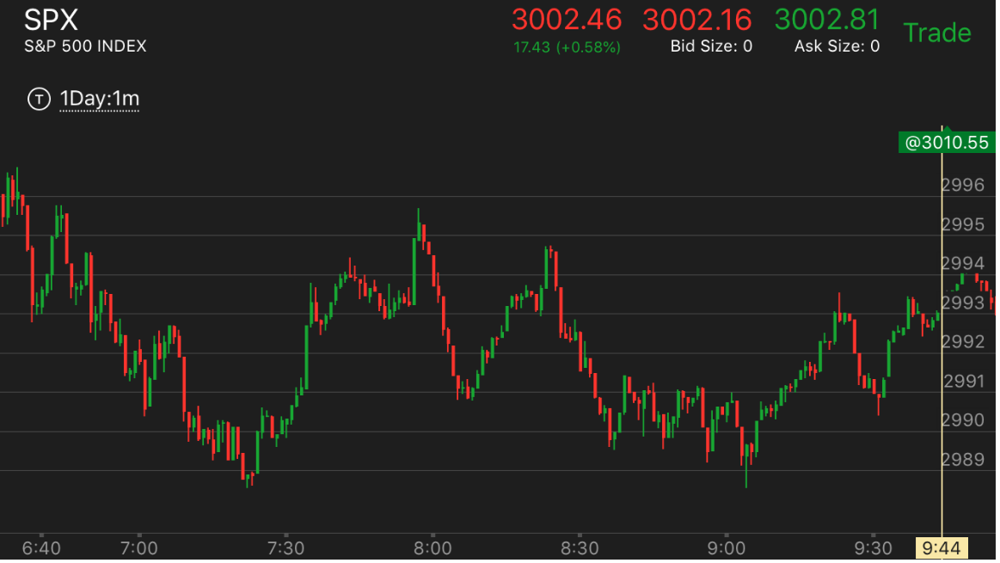

很弱的两段走势
- 很弱的两段走势，则表示，它的反向走势会很强。
- 弱两段走势1：第二段刚刚和第一浪一样高或者低，只是速度稍微快一些。
- 弱两段走势2：第一段发生后，大幅回撤。有时候，回撤100%，有时候回撤80%。这时第二段结束的时候，刚刚比
第一段长度多一些，甚至不怎么多，只是它在底部有加速。
第二段勉强比第一段长
第二段和第一段一样高/低，只是速度快一些
第二段比第一段短，但是反弹和第一段不一样。
第二段比第一段短，但是反弹和第一段不一样。
TOP

图示：10:10第一浪，10：25第二浪，这个第二浪是直接越过第一浪的，说明了一定的加速，然后它
在高处走平的时间比第一浪长。也说明了加速。但是它的长度比第一浪要短。但是也造成了反转。这个反转一直到了10：40低于
第一浪的开始才结束，然后继续走高。

图示:
开盘下跌后，6：40出现了两段上涨走势，第二段6：45出现，直接越过前面的高点后，走平。这样形成了加速。要想到这个是
很弱的两段走势，那么它的反向走势会很强。
第二段勉强比第一段长
TOP

图示：开盘后，走平几分钟，下跌。形成了第一浪。可以看到第一浪只有三个点。
后面一路缓慢下跌，不断的反弹。7：10出现了比较快速的下跌。它的幅度勉强到了3个点。然后走平。再次加速下跌。
这样就完成了下跌的任务。可以比较这个两段走势。第一浪下跌后，它很快就大幅反弹。而第二浪下跌后，它
走平，然后再次下跌。这样就说明，这样就是一个加速走势。应该反转了。反转后，它大涨，然后大涨结束，
它从高点大幅下跌，第一浪就是7个点。8:00第一浪结束后，它大幅反弹，几乎拉回原位。再次下跌。这个第二浪到了
8：40，也是几乎7个点，然后走平。9：00出现了一个两段走势。第一段下跌的时候，立刻反弹。9：02，第二段下跌的时候，
在底部走平2分钟。这样就形成了反转。这两个两段走势都很勉强。但是也完成了加速。大盘这时全面反转。
开始大涨，创新高。
第二段和第一段一样高/低，只是速度快一些
TOP

图示：开盘后，两段上涨。第二段很弱。创新高后，没有停留，立刻下来。
创新低，然后出现了一个反常两段下跌后，反弹。填补一部分真空后。继续大跌。

图示：6：45下跌两段走势结束。开始上涨，它上涨后，回调。7：10出现了上涨的第二段。可以看到。这个第二段
没有创新高。只是快速上涨后。立刻快速拉回。越过了第一浪的起始点。形成了下跌的第一浪。这个第一浪很强，表示这个下跌走势，不会轻易结束。

图示：开盘后，先向下，然后上涨。这样就是第一浪。快速返回后，再次上涨。没有新高。但是回到高点，一直走平。这样就是一个两段走势了。它的顶部不是很平。
但是震荡时间长。所以也构成了一个顶部。这个没有新高。只是接近新高。属于很弱的两段上涨。它走平后大跌。速度很快。说明是个很强的跌势。

图示：这个发生在刚刚开盘，属于很弱的两段上涨。没有新高，下跌幅度很大。说明是个很强的第一浪下跌。不会轻易结束。

图示：开盘出现了两段走势。结果在高点没有停留一分钟，就立刻下跌了。虽然它创了新高。但是因为没有停留。所以也属于很弱的两段上涨。